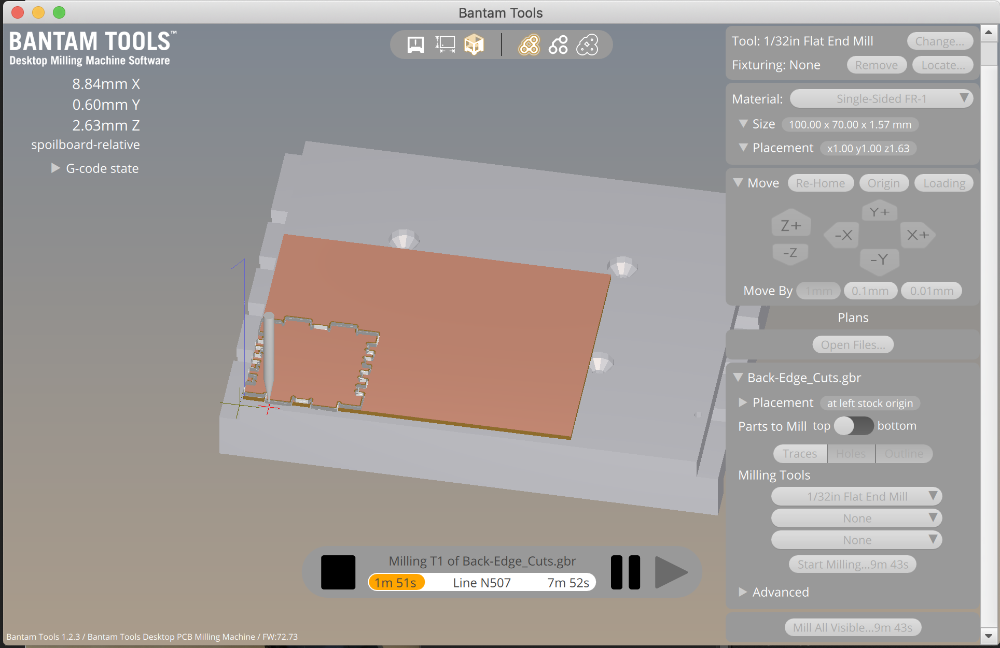

Creating things with a milling machine was a different experience compared to previous assignments. Thinking about how the path that router bit will use to cut through the material added to the design challenge.
I decided to create a box with two types of corner joints as shown in the blog post from Nadya. I used a combination of finger joints as they are simple to create and fingertip joints for better hold on the pieces.
I started by creating the bottom side. I created dog bones at the corners to account for the path that the bit will have to take when creating sharp angles. I found that it was easy to create the same joint pattern on each side of the face using the Linear Pattern command to duplicate the joint across an edge followed by a Circular Pattern command to copy the joint to the three other sides.
With one face was created, I created a matching face perpendicular shape for the sides.
With the Transform command’s Rotate and Translate by XYZ options, I was able to move the pieces to the correct orientation. The Copy part checkbox allowed me to quickly duplicate pieces for the various sides of the box.
After creating a shape for the front and back side of the box, the final box looked like this.
I exported the individual shapes from OnShape as DXF files. I then imported them into Kicad to convert them into GBR files. This was then imported into the Bantam tool so that they can be milled on the machine. Within Bantam, the placement x, y, z values had to be changed to account for the FR1 sandwich I was going to use for milling.

Milling was quick as my pieces were intentionally scaled small to begin with.
Once all the pieces were cut, I was able to assemble the box laid out flat.
Here is the box assembled.
Within Bantam, it was helpful to set the z-offset positioning to be slightly more so that I can guarantee a cut all the way through the material. If I didn’t do that, there were slight variances in the thickness of the material.
In OnShape, it was important to allow for some tolerances between where the pieces came together. I didn’t account for that initially and that resulted in too tight of a fit. I had to file down some of the joints to make them fit.
Bantam
GBR files
OnShape project file: here
Thanks to Kellie @kelliead and Cindy @cindygfeng with their help on using the milling machine. Also grateful for their tips on accounting for the tolerance so that parts will fit nicely together. Even though things fit in OnShape, the physical world is different.